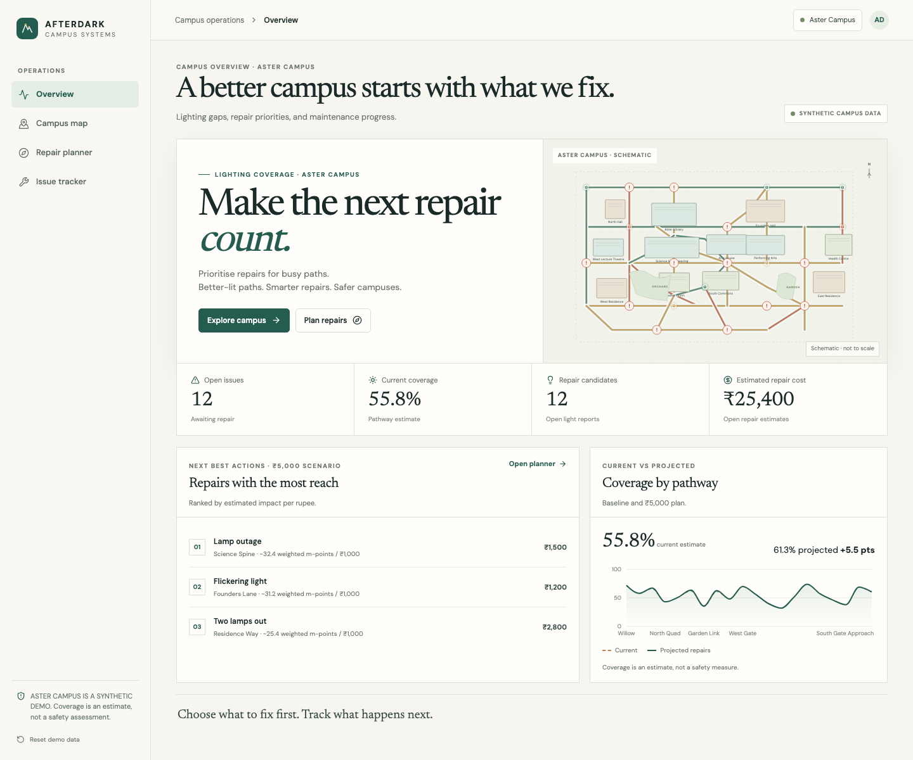

AfterDark.Campus lighting intelligenceHERHACK 2026 · Student Innovation
Budget 3,000 → 5,000
+3.6 pts
Coverage after plan 59.4% · exact search across every feasible repair set.
01 / 05
AfterDark.
Better-lit paths. Smarter repairs. Safer campuses.